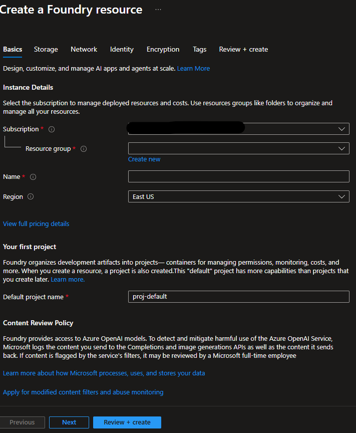
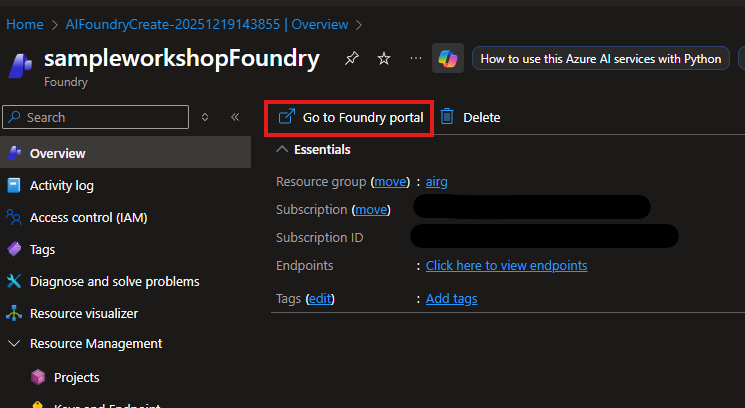

Module 3: Azure AI Foundry Setup
Create AI project and deploy GPT model
⏱️ Duration: 15 minutes🎯 What You'll Accomplish
In this module, you'll set up Azure AI Foundry, create a project, deploy a GPT model, and configure your application to use it.
☁️ Step 1: Access Azure AI Foundry
-
Open Azure AI Foundry
Go to https://ai.azure.com/ in your web browser.
-
Sign In
Sign in with the same Microsoft account.
-
Accept Terms
If prompted, accept the terms and conditions to access Azure AI Foundry.
🏗️ Step 2: Create Microsoft Foundry
It contains all your AI projects and shared resources.
-
Click "+ Create a resource"
Look for this button on the home page or in the left navigation.
-
Search "Microsoft Foundry"
This will take you to marketplace
-
Click "Create"
This will take you to wizard to setup your Microsoft Foundry.
-
Configure Microsoft Foundry
Fill in the following information:
 -
Click "Create"
Leave all default and click "Create" to finish setting up your Microsoft Foundry.
🤖 Step 3: Deploy a GPT Model
Now let's deploy a language model that your agent will use.
Navigate to Model Catalog
-
Navigate to Microsoft Foundry and go to "Model catalog"
In your project, find "Model catalog" in the left sidebar or top navigation.
 -
Find GPT-4.1
Search for or browse to find GPT-4.1 (or GPT-4.1-mini for cost savings).
 Model Options:
Model Options:- GPT-4.1: Latest and most capable (~$15/1M tokens check updated price)
- GPT-4.1-mini: Faster and cheaper (~$0.60/1M tokenscheck updated price) - Recommended for workshop
- GPT-3.5 Turbo: Budget option (~$1/1M tokencheck updated prices)
-
Click "Use this Model"
Select the model and click the deploy button.
-
Configure Deployment
Deployment name gpt-4.1Model version Select latest available Deployment type Standard Tokens per minute Use default (usually 150K) -
Click "Deploy"
Wait for deployment to complete .

🔑 Step 5: Get Connection Details
Now we need to collect the information to connect our code to Azure AI.
Get Model Deployment Details
-
Stick to Details section of model deployment
Copy Endpoint URL
-
Copy Key
Go to "Keys" and copy the keys.
-
Copy Deployment name
Copy the deployment name you used when deploying the model (e.g.,
gpt-4.1).
⚙️ Step 6: Update .env File
Now let's update the .env file with the real values.
-
Open the .env File
In your agentquickstart folder, open the
.envfile in your text editor. -
Replace the Placeholders
Update the file with your actual values:
.env file# Azure AI Project Configuration AZURE_AI_PROJECT_ENDPOINT=https://{your-endpoint}.openai.azure.com AZURE_AI_MODEL_DEPLOYMENT_NAME={your-deployment-name} AZURE_AI_API_KEY={your-api-key}Replace these values:AZURE_AI_PROJECT_ENDPOINT: Paste your project name selectedAZURE_AI_MODEL_DEPLOYMENT_NAME: Paste your deployment nameAZURE_AI_API_KEY: Paste your API key
-
Save the File
Save the .env file. Make sure there are no extra spaces or quotes around the values.
✅ Azure Setup Checklist
- Created Azure AI Hub
- Created AI Project within the hub
- Deployed GPT-4o or GPT-4o-mini model
- Copied project endpoint URL
- Copied deployment name
- Updated .env file with real values